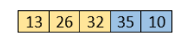
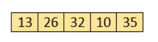

Bubble sort complexity
Now, let's see the time complexity of bubble sort in the best case, average case, and worst case.
We will also see the space complexity of bubble sort.
1. Time Complexity
Average Case :- O(n2)
Worst Case :- O(n2)
Now, let's see the working of Bubble sort Algorithm.
To understand the working of bubble sort algorithm, let's take an
unsorted array.
We are taking a short and accurate array, as we know the
complexity of bubble sort is O(n2).
Let the elements of array are -
First Pass
Sorting will start from the initial two elements. Let compare them to check which is greater.
Here, 32 is greater than 13 (32 > 13), so it is already sorted. Now, compare 32 with 26.
Here, 26 is smaller than 36. So, swapping is required.
After swapping new array will look like -
Now, compare 32 and 35.
Here, 35 is greater than 32. So, there is no swapping required as they are already sorted.
Now, the comparison will be in between 35 and 10.

Here, 10 is smaller than 35 that are not sorted. So, swapping is required.
Now, we reach at the end of the array. After first pass, the array will be -

Now, move to the second iteration.
Second Pass
The same process will be followed for second iteration.
Here, 10 is smaller than 32. So, swapping is required. After swapping, the array will be -
Now, move to the third iteration.
Third Pass
The same process will be followed for third iteration.
Here, 10 is smaller than 26. So, swapping is required. After swapping, the array will be -
Now, move to the fourth iteration.
Fourth pass
Similarly, after the fourth iteration, the array will be -
Hence, there is no swapping required, so the array is completely sorted.
Start Visualizer